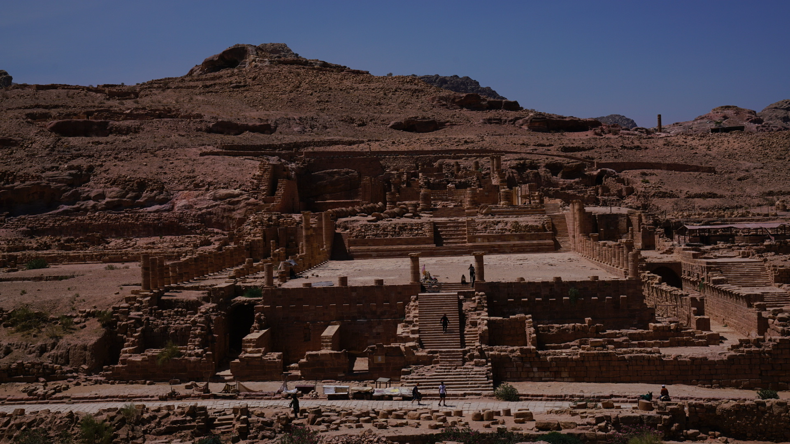
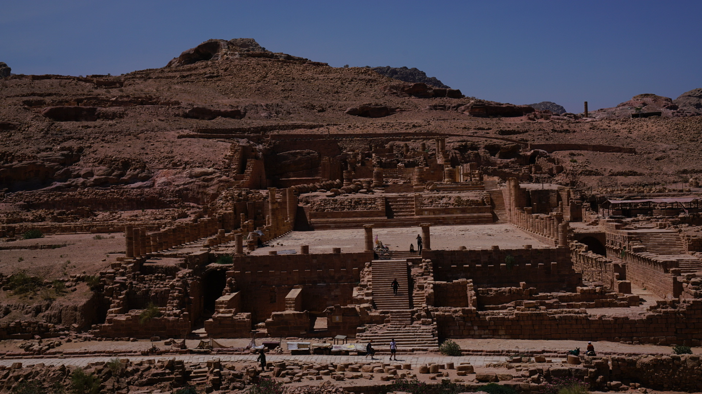

I'm really glad that I extended my stay in Granada.
Although no one seemed to be interested in the Palace of Aixa, mother of the last emperor of the Moorish dynasty.
It was on a mountain top and was a beautiful spot to watch sunset.
Be carely when you are walking on the Luis I Bridge in Porto! There is no travel lights and I almost got run over by a train.
For visiting Petra, definitely bring enough water, it will be almost a day's walk in desserted area.